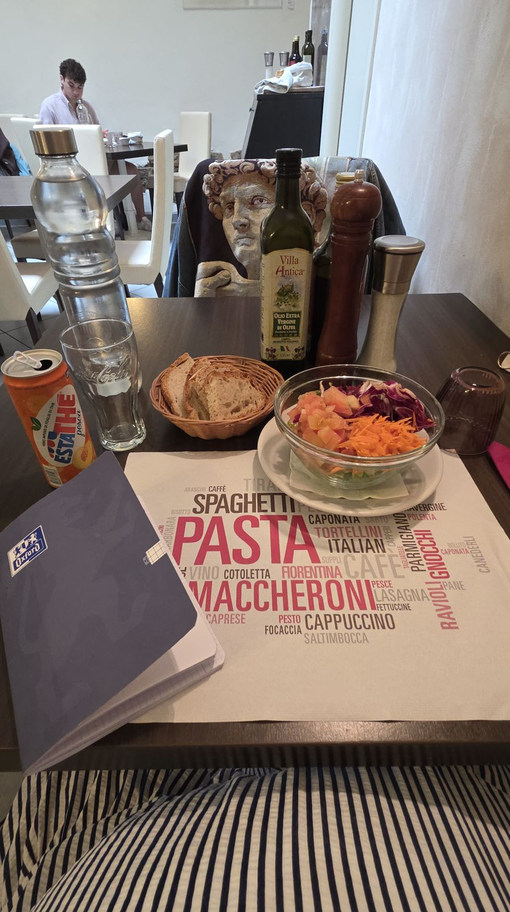
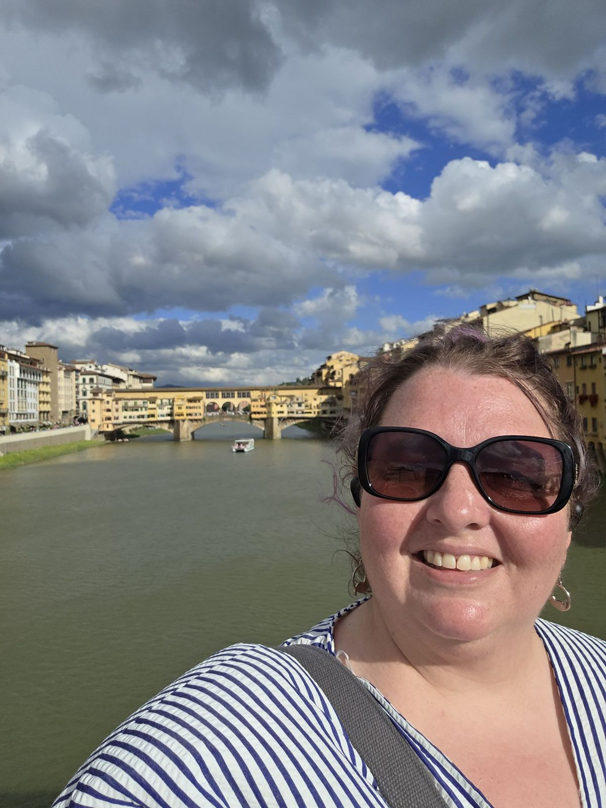
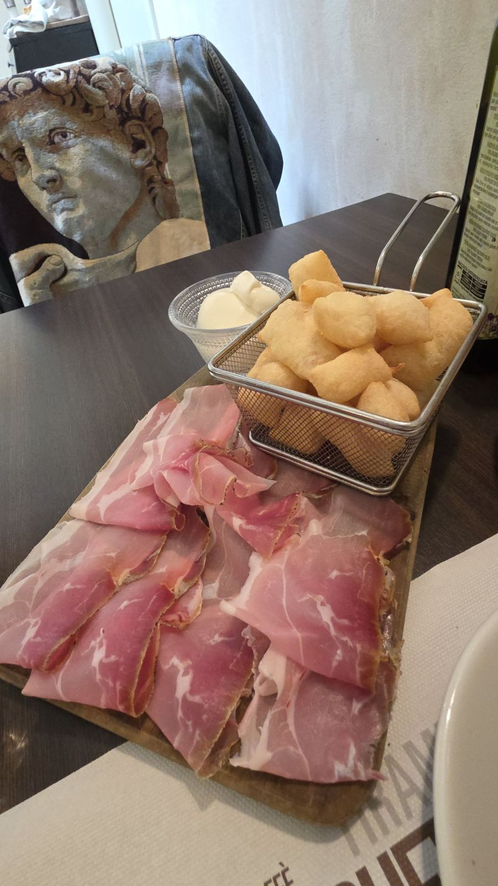
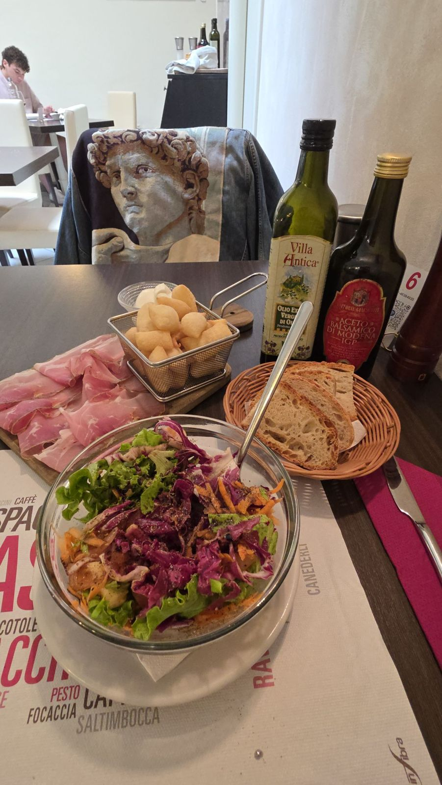
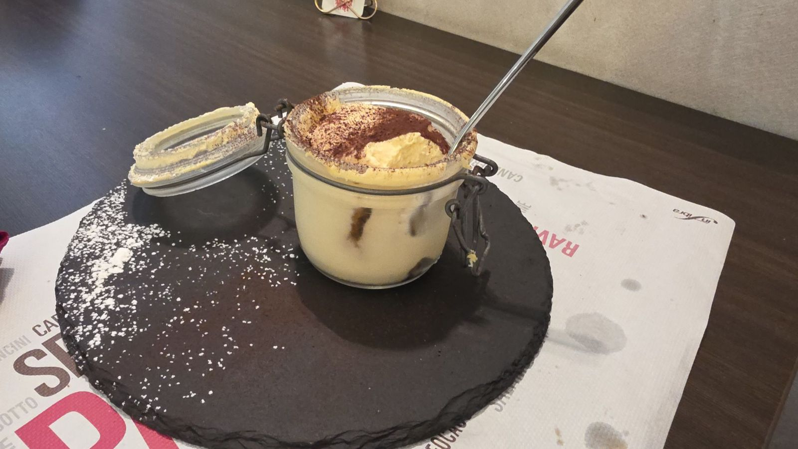

Journey 06 · Firenze Note 1 of 11 Field Note
Pentimento and Lunch

Today was the first day of the women’s conference here in Florence, and I am surrounded by some of the smartest, most accomplished women I have ever been in a room with. I will write about that. But first, I need to write about lunch.
The restaurant I returned to today is unchanged inside: the same bright white walls, the same large sketches adorning them, the same ivy hanging from the second story, maybe a bit longer now. And delightfully, the menu still includes the thing I came back for.

Coccoli con Stracchino.
It’s a dish served on a cutting board. Translucently thin slices of prosciutto surround a basket of miniature fried and salted pillows of pizza dough, the kind that pop in your mouth in a warm, salty, perfect little burst.
And the star of the show is the cheese. Stracchino. Soft, creamy, a little tangy, and almost impossible to find in the United States. And if you do find it, it’s still not as good.

I have been thinking about this appetizer since the last time I was in Florence, when I stumbled onto it at a restaurant near my hotel during a study abroad course called Renaissance Leadership. I practically lived there whenever I could. Some days I arrived for lunch, stayed through the afternoon, drank and talked, watched the people around me change, welcomed new companions to the table, and somehow found myself still there at dinner.
And this one dish became the thing I would dream about.
Today, on my third time in this city, I went back. I ordered it. And it held up. Maybe even surpassed the memory.
I also got a salad, because a platter of fried bread, cheese, and prosciutto asks for at least the appearance of balance.

And because I had already eaten my salad and was sitting in a slow Florentine afternoon with nowhere urgently to be, I also had tiramisu.
There’s a concept I keep returning to in my work: pentimento, the idea from visual art where earlier layers of a painting remain faintly visible beneath the surface. You can see where the artist changed her mind, where something was revised, where an earlier version still shows through. I think of it as the opposite of erasure. Nothing is gone. It’s just underneath.

Being in Florence for the third time feels a little like that. I am not starting fresh. I am walking into a city where I already have layers of memories: places I got lost, meals I remember vividly, a course that changed how I think about leadership, and earlier versions of myself moving through these same streets.
Rather than rushing past all of that to collect new experiences, I am trying to just let the layers exist together.
A slow lunch that somehow surpassed my memories of perfection is a very good way to do that.
Originally published at fieldnotesfromabroad.com/2026/05/11/pentimento-and-lunch/